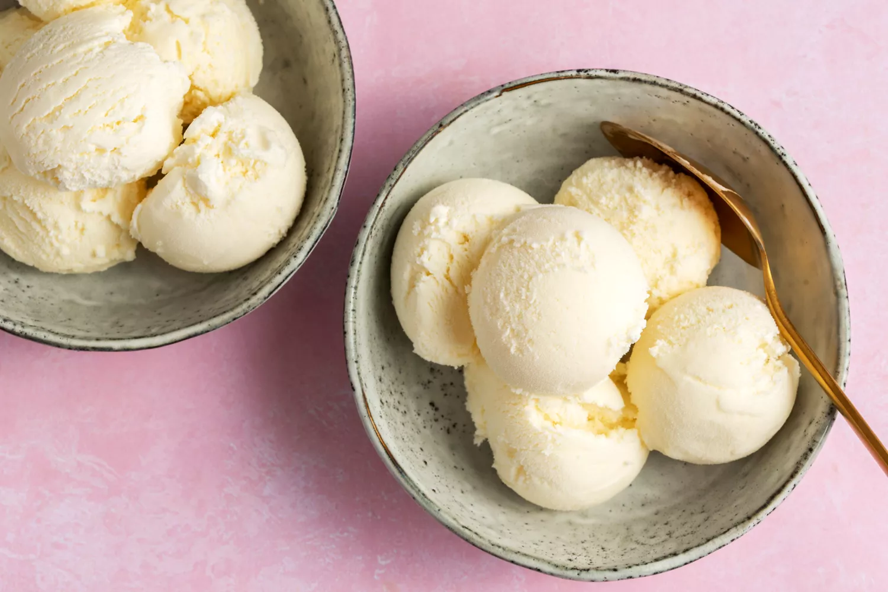

Simple Vanilla Ice Cream (No Churn)

Making Simple Ice Cream
Making ice cream is made simple with the use of an ice-cream maker. Using only a few ingredients, you can have ice cream in a matter of hours.
You can make this recipe well in advance and use for any event or even for your ice cream fix.
Ingredients
- 1 cup whole milk
- 1/3 cup granulated sugar
- 1 cup heavy cream
- 2 teaspoons pure vanilla extract
Directions
-
Gather the ingredients (premeasured in bowls/cups).
-
Whisk together the milk and sugar until the sugar is dissolved.
-
Gently stir in the heavy cream and vanilla.
-
Churn according to the directions of your ice-cream maker's manufacturer.
Enjoy immediately or freeze in a covered container to your desired firmness,
at least 2 hours or, preferrably, overnight.